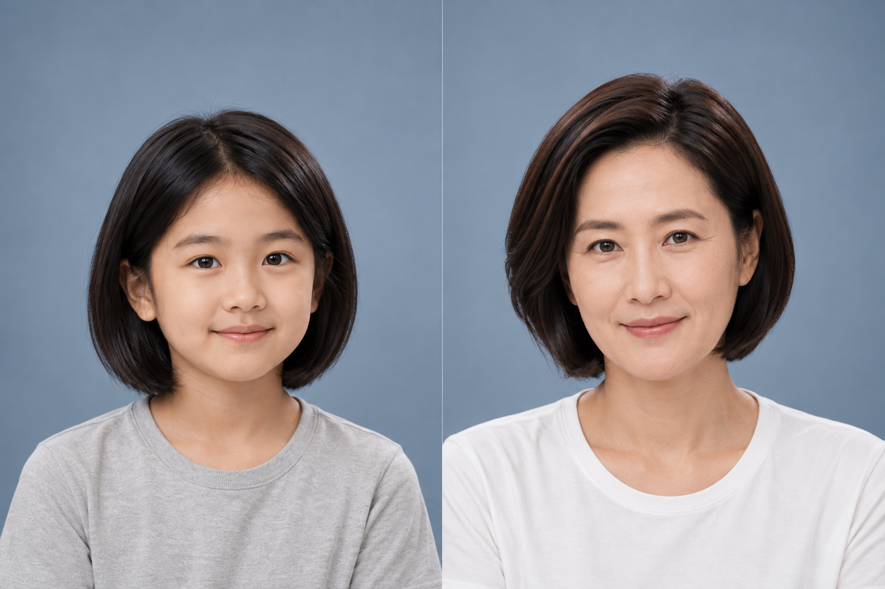

장기 실종아동 찾기를 위한 첫걸음
어릴 적 사진 너머,
지금의 모습을
떠올릴 수 있도록.
FindUs는 AI 현재 모습 추정으로
장기 실종아동 찾기를 돕는 서비스 아이디어입니다.
어린 시절과 현재 모습 모두 설명용 예시이며, 실제 실종 사례가 아닙니다.
우리가 바라보는 문제
40년 전 사진으로,
지금의 얼굴을 알아볼 수 있을까요?
1986사진 속 어린 얼굴
40년의 시간
2026지금은 어떤 모습일까?
시간이 흐를수록, 과거 사진만으로 현재 모습을 떠올리기 어렵습니다.
FindUs의 아이디어
과거 사진 + 현재의 단서.
찾는 데 도움이 될까요?
어린 시절 예시
AI 추정 예시
현재의 모습을 떠올릴 단서AI 현재 모습 추정
공식기관 제보 연결
사진을 바탕으로 만든 AI 생성 예시 · 실제 실종 사례나 검증된 추정 결과가 아닙니다.
여러분의 의견이 필요한 이유
여러분의 관심이,
장기 실종아동 찾기에 힘이 됩니다.
여러분의 의견으로, 찾는 데 도움이 되는 서비스를 만들어갑니다.
문제에 대한 관심
장기 실종아동 문제,
어떻게 바라보시나요?
AI 기술의 가능성
현재 모습 추정,
도움이 될까요?
정보를 접한 뒤의 행동
무엇을 하고,
왜 제보를 망설일까요?
AI 활용에 대한 우려
예상 얼굴을 사용할 때,
무엇이 걱정되시나요?
공개 정보만, AI는 참고용으로.
신원 정보는 경찰청 안전Dream의 공개 범위 내에서만 제공합니다.
AI가 생성한 현재 예상 모습은 참고용 추정 이미지이며 실제 모습과 다를 수 있습니다.
실제 신원 확인은 경찰 등 공식기관의 절차를 통해 이루어집니다.
관심을 이어가는 3분
장기 실종아동 찾기,
여러분의 관심으로 함께해주세요.
3분 설문 참여하기 (Microsoft Forms, 새 탭)
약 3분 · Microsoft Forms